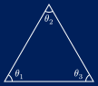
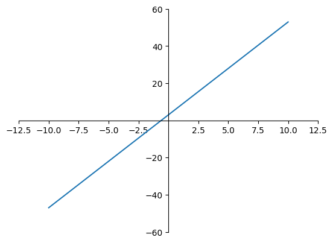
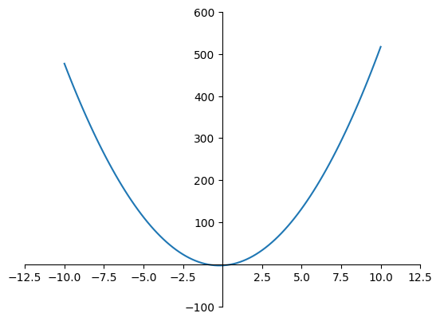

Att förstå algoritmer är mycket viktigare än att förstå programmeringsspråk!
algoritm, algoritmen, algoritmer (subst.)
instruktionsföljd för lösning av problem av (mer el. mindre) matematiskt slag
— Svenska Akademiens Ordlista (2026)

\[ \begin{align*} \theta_1 + \theta_2 + \theta_3 &= 180^\circ\\ \theta_3 &= 180^\circ - \theta_1 - \theta_2 \end{align*} \]
Vår algoritm är då
Eller lite mer kompakt…

Hälsningsalgoritmen
hello.o: file format elf64-x86-64
Disassembly of section .text:
0000000000000000 <main>:
0: 55 push rbp
1: 48 89 e5 mov rbp,rsp
4: 48 8d 15 00 00 00 00 lea rdx,[rip+0x0] # b <main+0xb>
b: 48 8d 05 00 00 00 00 lea rax,[rip+0x0] # 12 <main+0x12>
12: 48 89 d6 mov rsi,rdx
15: 48 89 c7 mov rdi,rax
18: e8 00 00 00 00 call 1d <main+0x1d>
1d: 48 8b 15 00 00 00 00 mov rdx,QWORD PTR [rip+0x0] # 24 <main+0x24>
24: 48 89 d6 mov rsi,rdx
27: 48 89 c7 mov rdi,rax
2a: e8 00 00 00 00 call 2f <main+0x2f>
2f: b8 00 00 00 00 mov eax,0x0
34: 5d pop rbp
35: c3 ret
hello: file format elf64-x86-64
Disassembly of section .init:
0000000000001000 <_init>:
1000: f3 0f 1e fa endbr64
1004: 48 83 ec 08 sub rsp,0x8
1008: 48 8b 05 c9 2f 00 00 mov rax,QWORD PTR [rip+0x2fc9] # 3fd8 <__gmon_start__>
100f: 48 85 c0 test rax,rax
1012: 74 02 je 1016 <_init+0x16>
1014: ff d0 call rax
1016: 48 83 c4 08 add rsp,0x8
101a: c3 ret
Disassembly of section .plt:
0000000000001020 <_ZStlsISt11char_traitsIcEERSt13basic_ostreamIcT_ES5_PKc@plt-0x10>:
1020: ff 35 ca 2f 00 00 push QWORD PTR [rip+0x2fca] # 3ff0 <_GLOBAL_OFFSET_TABLE_+0x8>
1026: ff 25 cc 2f 00 00 jmp QWORD PTR [rip+0x2fcc] # 3ff8 <_GLOBAL_OFFSET_TABLE_+0x10>
102c: 0f 1f 40 00 nop DWORD PTR [rax+0x0]
0000000000001030 <_ZStlsISt11char_traitsIcEERSt13basic_ostreamIcT_ES5_PKc@plt>:
1030: ff 25 ca 2f 00 00 jmp QWORD PTR [rip+0x2fca] # 4000 <_ZStlsISt11char_traitsIcEERSt13basic_ostreamIcT_ES5_PKc@GLIBCXX_3.4>
1036: 68 00 00 00 00 push 0x0
103b: e9 e0 ff ff ff jmp 1020 <_init+0x20>
0000000000001040 <_ZNSolsEPFRSoS_E@plt>:
1040: ff 25 c2 2f 00 00 jmp QWORD PTR [rip+0x2fc2] # 4008 <_ZNSolsEPFRSoS_E@GLIBCXX_3.4>
1046: 68 01 00 00 00 push 0x1
104b: e9 d0 ff ff ff jmp 1020 <_init+0x20>
Disassembly of section .text:
0000000000001050 <_start>:
1050: f3 0f 1e fa endbr64
1054: 31 ed xor ebp,ebp
1056: 49 89 d1 mov r9,rdx
1059: 5e pop rsi
105a: 48 89 e2 mov rdx,rsp
105d: 48 83 e4 f0 and rsp,0xfffffffffffffff0
1061: 50 push rax
1062: 54 push rsp
1063: 45 31 c0 xor r8d,r8d
1066: 31 c9 xor ecx,ecx
1068: 48 8d 3d da 00 00 00 lea rdi,[rip+0xda] # 1149 <main>
106f: ff 15 53 2f 00 00 call QWORD PTR [rip+0x2f53] # 3fc8 <__libc_start_main@GLIBC_2.34>
1075: f4 hlt
1076: 66 2e 0f 1f 84 00 00 cs nop WORD PTR [rax+rax*1+0x0]
107d: 00 00 00
0000000000001080 <deregister_tm_clones>:
1080: 48 8d 3d 99 2f 00 00 lea rdi,[rip+0x2f99] # 4020 <__TMC_END__>
1087: 48 8d 05 92 2f 00 00 lea rax,[rip+0x2f92] # 4020 <__TMC_END__>
108e: 48 39 f8 cmp rax,rdi
1091: 74 15 je 10a8 <deregister_tm_clones+0x28>
1093: 48 8b 05 36 2f 00 00 mov rax,QWORD PTR [rip+0x2f36] # 3fd0 <_ITM_deregisterTMCloneTable>
109a: 48 85 c0 test rax,rax
109d: 74 09 je 10a8 <deregister_tm_clones+0x28>
109f: ff e0 jmp rax
10a1: 0f 1f 80 00 00 00 00 nop DWORD PTR [rax+0x0]
10a8: c3 ret
10a9: 0f 1f 80 00 00 00 00 nop DWORD PTR [rax+0x0]
00000000000010b0 <register_tm_clones>:
10b0: 48 8d 3d 69 2f 00 00 lea rdi,[rip+0x2f69] # 4020 <__TMC_END__>
10b7: 48 8d 35 62 2f 00 00 lea rsi,[rip+0x2f62] # 4020 <__TMC_END__>
10be: 48 29 fe sub rsi,rdi
10c1: 48 89 f0 mov rax,rsi
10c4: 48 c1 ee 3f shr rsi,0x3f
10c8: 48 c1 f8 03 sar rax,0x3
10cc: 48 01 c6 add rsi,rax
10cf: 48 d1 fe sar rsi,1
10d2: 74 14 je 10e8 <register_tm_clones+0x38>
10d4: 48 8b 05 05 2f 00 00 mov rax,QWORD PTR [rip+0x2f05] # 3fe0 <_ITM_registerTMCloneTable>
10db: 48 85 c0 test rax,rax
10de: 74 08 je 10e8 <register_tm_clones+0x38>
10e0: ff e0 jmp rax
10e2: 66 0f 1f 44 00 00 nop WORD PTR [rax+rax*1+0x0]
10e8: c3 ret
10e9: 0f 1f 80 00 00 00 00 nop DWORD PTR [rax+0x0]
00000000000010f0 <__do_global_dtors_aux>:
10f0: f3 0f 1e fa endbr64
10f4: 80 3d 55 30 00 00 00 cmp BYTE PTR [rip+0x3055],0x0 # 4150 <completed.0>
10fb: 75 33 jne 1130 <__do_global_dtors_aux+0x40>
10fd: 55 push rbp
10fe: 48 83 3d b2 2e 00 00 cmp QWORD PTR [rip+0x2eb2],0x0 # 3fb8 <__cxa_finalize@GLIBC_2.2.5>
1105: 00
1106: 48 89 e5 mov rbp,rsp
1109: 74 0d je 1118 <__do_global_dtors_aux+0x28>
110b: 48 8b 3d 06 2f 00 00 mov rdi,QWORD PTR [rip+0x2f06] # 4018 <__dso_handle>
1112: ff 15 a0 2e 00 00 call QWORD PTR [rip+0x2ea0] # 3fb8 <__cxa_finalize@GLIBC_2.2.5>
1118: e8 63 ff ff ff call 1080 <deregister_tm_clones>
111d: c6 05 2c 30 00 00 01 mov BYTE PTR [rip+0x302c],0x1 # 4150 <completed.0>
1124: 5d pop rbp
1125: c3 ret
1126: 66 2e 0f 1f 84 00 00 cs nop WORD PTR [rax+rax*1+0x0]
112d: 00 00 00
1130: c3 ret
1131: 0f 1f 40 00 nop DWORD PTR [rax+0x0]
1135: 66 66 2e 0f 1f 84 00 data16 cs nop WORD PTR [rax+rax*1+0x0]
113c: 00 00 00 00
0000000000001140 <frame_dummy>:
1140: f3 0f 1e fa endbr64
1144: e9 67 ff ff ff jmp 10b0 <register_tm_clones>
0000000000001149 <main>:
1149: 55 push rbp
114a: 48 89 e5 mov rbp,rsp
114d: 48 8d 15 b0 0e 00 00 lea rdx,[rip+0xeb0] # 2004 <_IO_stdin_used+0x4>
1154: 48 8d 05 e5 2e 00 00 lea rax,[rip+0x2ee5] # 4040 <_ZSt4cout@GLIBCXX_3.4>
115b: 48 89 d6 mov rsi,rdx
115e: 48 89 c7 mov rdi,rax
1161: e8 ca fe ff ff call 1030 <_ZStlsISt11char_traitsIcEERSt13basic_ostreamIcT_ES5_PKc@plt>
1166: 48 8b 15 53 2e 00 00 mov rdx,QWORD PTR [rip+0x2e53] # 3fc0 <_ZSt4endlIcSt11char_traitsIcEERSt13basic_ostreamIT_T0_ES6_@GLIBCXX_3.4>
116d: 48 89 d6 mov rsi,rdx
1170: 48 89 c7 mov rdi,rax
1173: e8 c8 fe ff ff call 1040 <_ZNSolsEPFRSoS_E@plt>
1178: b8 00 00 00 00 mov eax,0x0
117d: 5d pop rbp
117e: c3 ret
Disassembly of section .fini:
0000000000001180 <_fini>:
1180: f3 0f 1e fa endbr64
1184: 48 83 ec 08 sub rsp,0x8
1188: 48 83 c4 08 add rsp,0x8
118c: c3 retVad är en funktion?
Ett matematiskt uttryck som tar argument och ger ett funktionsvärde.
En graf av \(f(x) = 5x + 3\)

En graf av \(f(x) = 5x^2 - 2x + 3\)

mattefunktion(5)
>>> 28
andragradsfunktion(3)
>>> 48En funktion kan…